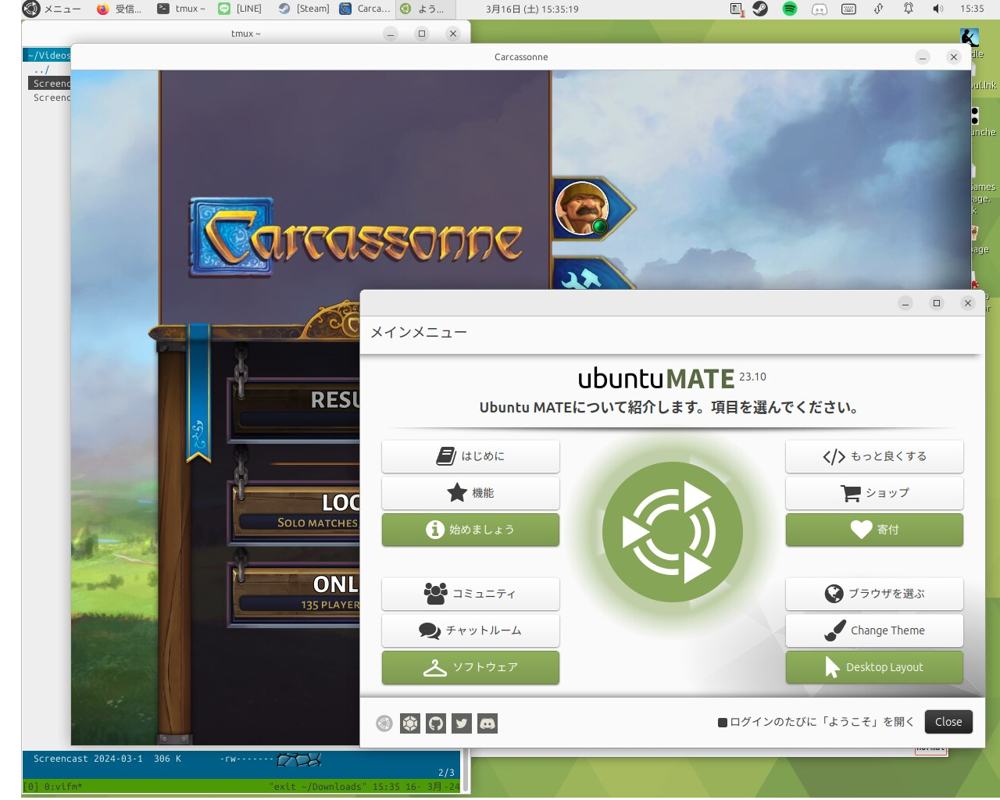
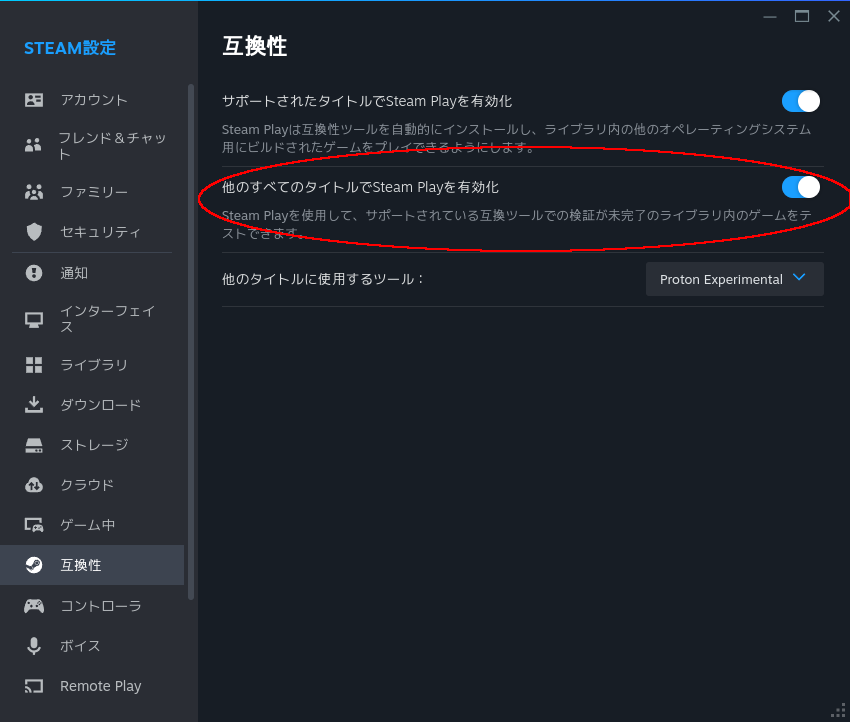

タイトルの通り Carcassonne – Tiles & Tactics by Asmodee が Ubuntu MATE 23.10 で動かせたので、そのお知らせです。
以下証拠のスクリーンショットです。
動作環境は以下の通りです。
ただしそのままではインストールできないので、Steam -> 設定 -> 互換性タブ と遷移し、画像のように “他のすべてのタイトルでSteam Playを有効化” をオンにしてください。オンにするとインストールができるようになり、私の環境ではプレイできるようになりました。
下の動画は実際に Carcassonne Tiles & Tactics が Ubuntu MATE 23.10 の Steam 環境で動いているところです。
©2024 OrzBruford